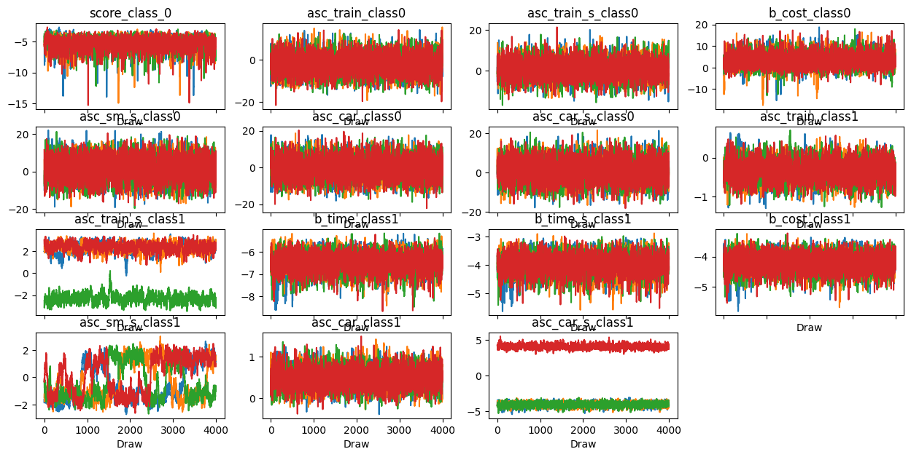
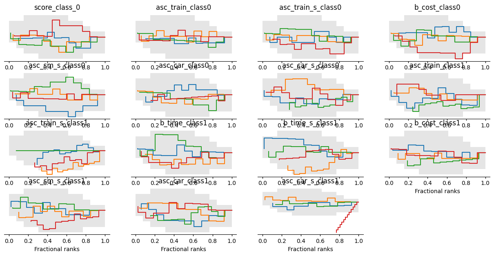
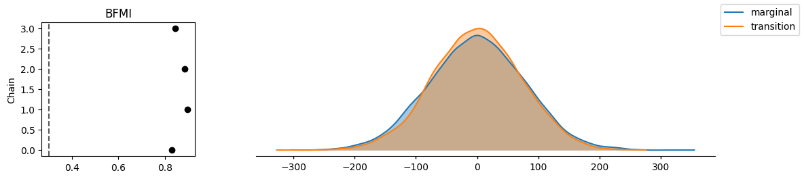
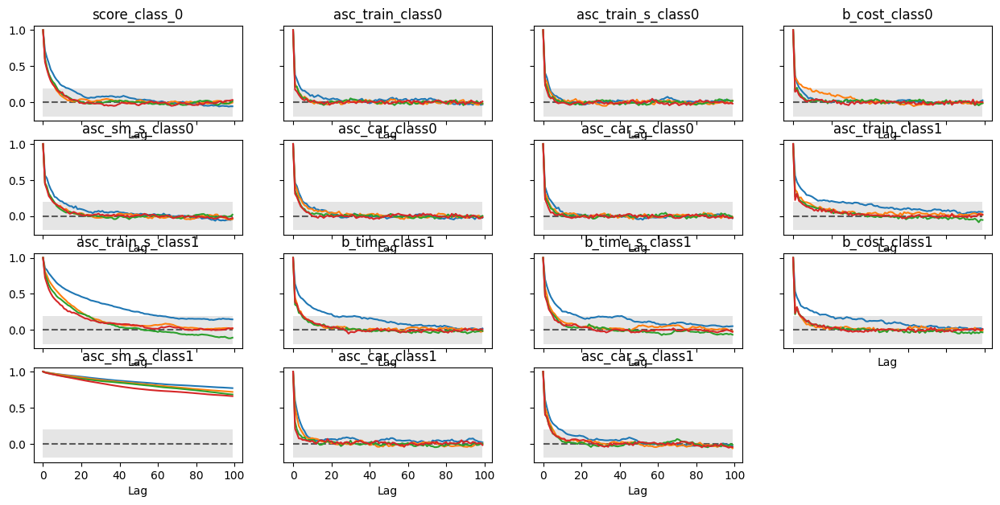

biogeme 3.3.4 [2026-08-11]
Python package
Home page: http://biogeme.epfl.ch
Submit questions to https://groups.google.com/d/forum/biogeme
Michel Bierlaire, Transport and Mobility Laboratory, Ecole Polytechnique Fédérale de Lausanne (EPFL)
This file has automatically been generated on 2026-08-11 19:52:37.761702
| Bayesian estimation report file: | b15_panel_discrete.html |
| Database name: | swissmetro |
| Sample size: | 6768 |
| Sampler: | NUTS |
| Number of chains: | 4 |
| Number of draws per chain: | 4000 |
| Total number of draws: | 16000 |
| Acceptance rate target: | 0.9 |
| Run time: | 0:27:27.347566 |
| Posterior predictive log-likelihood (sum of log mean p): | -2156.93 |
| Expected log-likelihood E[log L(Y|θ)]: | -2342.30 |
| Best-draw log-likelihood (posterior upper bound): | -2232.19 |
| LOO (Leave-One-Out Cross-Validation): | -3043.55 |
| LOO Standard Error: | 78.39 |
| Effective number of parameters (p_LOO): | 886.62 |
| Id | Name | Value (mean) | Value (median) | Value (mode) | std err. | z-value | p-value | HDI low | HDI high | R hat | ESS (bulk) | ESS (tail) |
|---|---|---|---|---|---|---|---|---|---|---|---|---|
| 5 | asc_car_class0 | -0.729 | -0.898 | -1.58 | 5.42 | -0.135 | 0.878 | -10.5 | 9.75 | 1 | 3.93e+03 | 5.68e+03 |
| 13 | asc_car_class1 | 0.501 | 0.496 | 0.486 | 0.235 | 2.14 | 0.0294 | 0.063 | 0.947 | 1 | 3.18e+03 | 5.34e+03 |
| 6 | asc_car_s_class0 | 0.996 | 0.884 | 0.248 | 5.12 | 0.195 | 0.856 | -9.04 | 10.2 | 1 | 5.5e+03 | 8.22e+03 |
| 14 | asc_car_s_class1 | -2.01 | -3.88 | -4 | 3.5 | -0.576 | 0.5 | -4.65 | 4.31 | 1.53 | 7.17 | 10.3 |
| 4 | asc_sm_s_class0 | 1.37 | 1.52 | 2.02 | 5.96 | 0.23 | 0.808 | -9.91 | 12.2 | 1 | 2.25e+03 | 2.75e+03 |
| 12 | asc_sm_s_class1 | -0.166 | -0.639 | -1.46 | 1.4 | -0.119 | 0.858 | -2.04 | 2.02 | 1.09 | 36 | 218 |
| 1 | asc_train_class0 | -2.57 | -2.73 | -3.26 | 4.2 | -0.613 | 0.522 | -10.5 | 5.31 | 1 | 4.19e+03 | 8.3e+03 |
| 7 | asc_train_class1 | -0.315 | -0.314 | -0.335 | 0.264 | -1.19 | 0.233 | -0.818 | 0.177 | 1 | 1.46e+03 | 2.63e+03 |
| 2 | asc_train_s_class0 | 0.745 | 0.703 | 0.59 | 4.25 | 0.175 | 0.857 | -7.18 | 9.05 | 1 | 6.34e+03 | 7.89e+03 |
| 8 | asc_train_s_class1 | 2.27 | 2.3 | 2.35 | 0.416 | 5.46 | 0 | 1.48 | 3.04 | 1.01 | 559 | 870 |
| 3 | b_cost_class0 | 2.73 | 2.5 | 1.85 | 3.26 | 0.839 | 0.319 | -2.29 | 9.34 | 1 | 2.35e+03 | 2.2e+03 |
| 11 | b_cost_class1 | -4.22 | -4.2 | -4.16 | 0.302 | -14 | 0 | -4.78 | -3.65 | 1 | 2.14e+03 | 3.05e+03 |
| 9 | b_time_class1 | -6.52 | -6.49 | -6.51 | 0.434 | -15 | 0 | -7.38 | -5.76 | 1 | 1.62e+03 | 2.06e+03 |
| 10 | b_time_s_class1 | -4.02 | -4 | -3.99 | 0.353 | -11.4 | 0 | -4.67 | -3.34 | 1 | 2.02e+03 | 3.13e+03 |
| 0 | score_class_0 | -5.27 | -5.12 | -4.96 | 1.1 | -4.81 | 0 | -7.25 | -3.47 | 1 | 1.11e+03 | 1.28e+03 |
| Name: | Identifier of the model parameter being estimated. |
| Value: | Posterior mean (expected value) of the parameter. |
| Median: | Posterior median (50% quantile) of the parameter. |
| Mode: | Posterior mode (most frequent value) of the parameter. |
| Std err.: | Posterior standard deviation, measuring uncertainty around the mean. |
| z-value: | Standardized estimate (mean divided by std. dev.), indicating signal-to-noise ratio. |
| p-value: | Two-sided Bayesian tail probability that the parameter differs in sign from zero. |
| HDI low / HDI high: | Lower and upper bounds of the Highest Density Interval containing the most probable parameter values. |
| R-hat (Gelman–Rubin): | Convergence diagnostic; values very close to 1 (typically ≤ 1.01) indicate well-mixed chains. |
| ESS (bulk): | Effective sample size for the central part of the posterior; values above ~400 are generally considered sufficient. |
| ESS (tail): | Effective sample size for the posterior tails; values above ~100 ensure reliable estimates of extreme quantiles. |
This section reports quick numerical checks for non-identification or weak identification. Intuitively, identification problems mean that some combinations of parameters can change without changing the likelihood much, so the posterior is very wide, or nearly flat, in some directions. These checks use the posterior draws and the prior draws, if available.
Posterior covariance diagnostics (eigenvalues, condition number, effective rank): these describe the shape of the posterior cloud in parameter space.
max_eigenvalue is the largest posterior-variance direction, that is, the widest direction of the posterior. When identification is weak, the posterior can become extremely wide along some linear combination of parameters; this often shows up as a very large max_eigenvalue together with a large condition number. If reported, the max_eigenvector_top loadings indicate which parameters contribute most to that weakly identified linear combination.
condition_number = max_eigenvalue / min_eigenvalue measures anisotropy of the posterior covariance. Larger values indicate stronger near-dependencies among parameters. As a rough rule of thumb, values around 103 deserve attention, and values around 105 or more are a strong red flag.
effective_rank is an effective dimension of posterior variability, between 0 and the number of parameters. If it is much smaller than the number of parameters, the posterior variability concentrates in a lower-dimensional subspace, consistent with near linear dependencies among parameters.
Prior covariance diagnostics report the same metrics for the prior. If the prior has normal scale and full rank but the posterior becomes ill-conditioned, the issue is typically in the likelihood or model specification, not in the prior.
Per-parameter prior/posterior dispersion, when prior draws are available, compares prior and posterior standard deviations. A ratio close to 1 means the data did not shrink uncertainty much, so the likelihood is weakly informative for that parameter. A ratio well below 1, for example 0.1 or 0.01, means the likelihood is informative for that parameter.
Flags: Some parameters have posterior std close to prior std (ratio > 0.8), suggesting they may be largely identified by the prior: asc_train_class0, asc_train_s_class0, asc_sm_s_class0, asc_car_class0, asc_car_s_class0
| effective_rank: | 15 |
| min_eigenvalue: | 0.0207 |
| max_eigenvalue: | 36.8 |
| min_positive_eigenvalue: | 0.0207 |
| condition_number: | 1.78e+03 |
| effective_rank: | 15 |
| min_eigenvalue: | 22.4 |
| max_eigenvalue: | 27.3 |
| min_positive_eigenvalue: | 22.4 |
| condition_number: | 1.22 |
The table below compares posterior and prior standard deviations when prior draws are available. A ratio close to 1 suggests that the prior dominates; a ratio well below 1 suggests that the data are informative.
| name | posterior_std | prior_std | std_ratio_post_over_prior |
|---|---|---|---|
| score_class_0 | 1.096698684725271 | 5.073077194235596 | 0.2161801689064422 |
| asc_train_class0 | 4.19691514059804 | 4.909146492406274 | 0.8549174784435642 |
| asc_train_s_class0 | 4.249408051151106 | 4.992619243020167 | 0.8511380188048403 |
| b_cost_class0 | 3.2580921475507343 | 4.91517315827124 | 0.6628641642193268 |
| asc_sm_s_class0 | 5.955646545387682 | 5.025784131696488 | 1.1850183751082266 |
| asc_car_class0 | 5.419019607868663 | 5.047877360239936 | 1.0735244185114445 |
| asc_car_s_class0 | 5.116619364504827 | 4.8835255400763256 | 1.0477306451078494 |
| asc_train_class1 | 0.26429234463296747 | 4.949645756781153 | 0.053396214117117285 |
| asc_train_s_class1 | 0.41576918083474823 | 5.043702714511325 | 0.08243332416054805 |
| b_time_class1 | 0.4343681328756314 | 5.06926937678264 | 0.08568653598584573 |
| b_time_s_class1 | 0.35256807982465493 | 4.959497297808021 | 0.07108947916565689 |
| b_cost_class1 | 0.30218394271363785 | 5.033217270103813 | 0.060037929319789754 |
| asc_sm_s_class1 | 1.3985337411599221 | 5.020042959667889 | 0.27858999462674816 |
| asc_car_class1 | 0.234519380909442 | 4.996871659834356 | 0.046933240810354576 |
| asc_car_s_class1 | 3.495058171125986 | 4.979489089514696 | 0.7018909185855082 |
| group | variable | dims | shape |
|---|---|---|---|
| constant_data | CAR_AV_SP | (obs,) | (6768,) |
| constant_data | CAR_CO_SCALED | (obs,) | (6768,) |
| constant_data | CAR_TT_SCALED | (obs,) | (6768,) |
| constant_data | CHOICE | (obs,) | (6768,) |
| constant_data | SM_AV | (obs,) | (6768,) |
| constant_data | SM_COST_SCALED | (obs,) | (6768,) |
| constant_data | SM_TT_SCALED | (obs,) | (6768,) |
| constant_data | TRAIN_AV_SP | (obs,) | (6768,) |
| constant_data | TRAIN_COST_SCALED | (obs,) | (6768,) |
| constant_data | TRAIN_TT_SCALED | (obs,) | (6768,) |
| log_likelihood | _choice | (chain, draw, individuals) | (4, 4000, 752) |
| posterior | asc_car_class0 | (chain, draw) | (4, 4000) |
| posterior | asc_car_class1 | (chain, draw) | (4, 4000) |
| posterior | asc_car_eps_class0 | (chain, draw, individuals) | (4, 4000, 752) |
| posterior | asc_car_eps_class1 | (chain, draw, individuals) | (4, 4000, 752) |
| posterior | asc_car_rnd_class0 | (chain, draw, obs) | (4, 4000, 6768) |
| posterior | asc_car_rnd_class0_per_individual | (chain, draw, individuals) | (4, 4000, 752) |
| posterior | asc_car_rnd_class1 | (chain, draw, obs) | (4, 4000, 6768) |
| posterior | asc_car_rnd_class1_per_individual | (chain, draw, individuals) | (4, 4000, 752) |
| posterior | asc_car_s_class0 | (chain, draw) | (4, 4000) |
| posterior | asc_car_s_class1 | (chain, draw) | (4, 4000) |
| posterior | asc_sm_eps_class0 | (chain, draw, individuals) | (4, 4000, 752) |
| posterior | asc_sm_eps_class1 | (chain, draw, individuals) | (4, 4000, 752) |
| posterior | asc_sm_rnd_class0 | (chain, draw, obs) | (4, 4000, 6768) |
| posterior | asc_sm_rnd_class0_per_individual | (chain, draw, individuals) | (4, 4000, 752) |
| posterior | asc_sm_rnd_class1 | (chain, draw, obs) | (4, 4000, 6768) |
| posterior | asc_sm_rnd_class1_per_individual | (chain, draw, individuals) | (4, 4000, 752) |
| posterior | asc_sm_s_class0 | (chain, draw) | (4, 4000) |
| posterior | asc_sm_s_class1 | (chain, draw) | (4, 4000) |
| posterior | asc_train_class0 | (chain, draw) | (4, 4000) |
| posterior | asc_train_class1 | (chain, draw) | (4, 4000) |
| posterior | asc_train_eps_class0 | (chain, draw, individuals) | (4, 4000, 752) |
| posterior | asc_train_eps_class1 | (chain, draw, individuals) | (4, 4000, 752) |
| posterior | asc_train_rnd_class0 | (chain, draw, obs) | (4, 4000, 6768) |
| posterior | asc_train_rnd_class0_per_individual | (chain, draw, individuals) | (4, 4000, 752) |
| posterior | asc_train_rnd_class1 | (chain, draw, obs) | (4, 4000, 6768) |
| posterior | asc_train_rnd_class1_per_individual | (chain, draw, individuals) | (4, 4000, 752) |
| posterior | asc_train_s_class0 | (chain, draw) | (4, 4000) |
| posterior | asc_train_s_class1 | (chain, draw) | (4, 4000) |
| posterior | b_cost_class0 | (chain, draw) | (4, 4000) |
| posterior | b_cost_class1 | (chain, draw) | (4, 4000) |
| posterior | b_time_class1 | (chain, draw) | (4, 4000) |
| posterior | b_time_eps_class1 | (chain, draw, individuals) | (4, 4000, 752) |
| posterior | b_time_rnd_class1 | (chain, draw, obs) | (4, 4000, 6768) |
| posterior | b_time_rnd_class1_per_individual | (chain, draw, individuals) | (4, 4000, 752) |
| posterior | b_time_s_class1 | (chain, draw) | (4, 4000) |
| posterior | log_like | (chain, draw, individuals) | (4, 4000, 752) |
| posterior | score_class_0 | (chain, draw) | (4, 4000) |
| prior | asc_car_class0 | (chain, draw) | (1, 4000) |
| prior | asc_car_class1 | (chain, draw) | (1, 4000) |
| prior | asc_car_eps_class0 | (chain, draw, individuals) | (1, 4000, 752) |
| prior | asc_car_eps_class1 | (chain, draw, individuals) | (1, 4000, 752) |
| prior | asc_car_rnd_class0 | (chain, draw, obs) | (1, 4000, 6768) |
| prior | asc_car_rnd_class0_per_individual | (chain, draw, individuals) | (1, 4000, 752) |
| prior | asc_car_rnd_class1 | (chain, draw, obs) | (1, 4000, 6768) |
| prior | asc_car_rnd_class1_per_individual | (chain, draw, individuals) | (1, 4000, 752) |
| prior | asc_car_s_class0 | (chain, draw) | (1, 4000) |
| prior | asc_car_s_class1 | (chain, draw) | (1, 4000) |
| prior | asc_sm_eps_class0 | (chain, draw, individuals) | (1, 4000, 752) |
| prior | asc_sm_eps_class1 | (chain, draw, individuals) | (1, 4000, 752) |
| prior | asc_sm_rnd_class0 | (chain, draw, obs) | (1, 4000, 6768) |
| prior | asc_sm_rnd_class0_per_individual | (chain, draw, individuals) | (1, 4000, 752) |
| prior | asc_sm_rnd_class1 | (chain, draw, obs) | (1, 4000, 6768) |
| prior | asc_sm_rnd_class1_per_individual | (chain, draw, individuals) | (1, 4000, 752) |
| prior | asc_sm_s_class0 | (chain, draw) | (1, 4000) |
| prior | asc_sm_s_class1 | (chain, draw) | (1, 4000) |
| prior | asc_train_class0 | (chain, draw) | (1, 4000) |
| prior | asc_train_class1 | (chain, draw) | (1, 4000) |
| prior | asc_train_eps_class0 | (chain, draw, individuals) | (1, 4000, 752) |
| prior | asc_train_eps_class1 | (chain, draw, individuals) | (1, 4000, 752) |
| prior | asc_train_rnd_class0 | (chain, draw, obs) | (1, 4000, 6768) |
| prior | asc_train_rnd_class0_per_individual | (chain, draw, individuals) | (1, 4000, 752) |
| prior | asc_train_rnd_class1 | (chain, draw, obs) | (1, 4000, 6768) |
| prior | asc_train_rnd_class1_per_individual | (chain, draw, individuals) | (1, 4000, 752) |
| prior | asc_train_s_class0 | (chain, draw) | (1, 4000) |
| prior | asc_train_s_class1 | (chain, draw) | (1, 4000) |
| prior | b_cost_class0 | (chain, draw) | (1, 4000) |
| prior | b_cost_class1 | (chain, draw) | (1, 4000) |
| prior | b_time_class1 | (chain, draw) | (1, 4000) |
| prior | b_time_eps_class1 | (chain, draw, individuals) | (1, 4000, 752) |
| prior | b_time_rnd_class1 | (chain, draw, obs) | (1, 4000, 6768) |
| prior | b_time_rnd_class1_per_individual | (chain, draw, individuals) | (1, 4000, 752) |
| prior | b_time_s_class1 | (chain, draw) | (1, 4000) |
| prior | log_like | (chain, draw, individuals) | (1, 4000, 752) |
| prior | score_class_0 | (chain, draw) | (1, 4000) |
| sample_stats | acceptance_rate | (chain, draw) | (4, 4000) |
| sample_stats | diverging | (chain, draw) | (4, 4000) |
| sample_stats | energy | (chain, draw) | (4, 4000) |
| sample_stats | lp | (chain, draw) | (4, 4000) |
| sample_stats | n_steps | (chain, draw) | (4, 4000) |
| sample_stats | step_size | (chain, draw) | (4, 4000) |
| sample_stats | tree_depth | (chain, draw) | (4, 4000) |
The plots below summarize MCMC diagnostics. Look for well-mixed chains, agreement across chains, and weak lag dependence.
Trace: per-chain draws vs iteration and marginal density. Good: chains overlap, no trends or stickiness, rapid mixing. Suspicious: chains at different levels, strong drifts, long flat stretches, sudden jumps. | |
| Trace |  |
Rank plot: rank-normalized samples by chain. Good: chains produce nearly uniform, overlapping ranks. Suspicious: U-shapes, spikes, or chains with very different rank distributions. | |
| Rank plot |  |
Energy: HMC energy diagnostics and BFMI. Good: similar energy distributions across chains, no extreme tails; BFMI not flagged. Suspicious: clearly separated energy histograms across chains or very low BFMI. | |
| Energy |  |
Autocorrelation: lag correlation within chains. Good: autocorrelation decays quickly toward 0 within tens of lags. Suspicious: long positive tails, high values at large lags, or periodic patterns. | |
| Autocorrelation |  |
The figures above are only a subset of the ArviZ diagnostics. To generate additional figures, reload the Bayesian results file containing the posterior draws and call ArviZ directly. Adapt the filename and variable names in the example below if necessary.
See the official ArviZ documentation for more plotting functions and options: ArviZ examples, ArviZ plotting API.
import arviz as az
import matplotlib.pyplot as plt
from biogeme.bayesian_estimation.bayesian_results import BayesianResults
results = BayesianResults.from_netcdf('b15_panel_discrete.nc')
# Use None for all variables, or specify a list such as ['beta_time', 'beta_cost'].
var_names = ['score_class_0', 'asc_train_class0', 'asc_train_s_class0', 'b_cost_class0', 'asc_sm_s_class0', 'asc_car_class0', 'asc_car_s_class0', 'asc_train_class1', 'asc_train_s_class1', 'b_time_class1', 'b_time_s_class1', 'b_cost_class1', 'asc_sm_s_class1', 'asc_car_class1', 'asc_car_s_class1']
az.plot_trace(results.idata, var_names=var_names)
plt.show()
az.plot_rank(results.idata, var_names=var_names)
plt.show()
az.plot_autocorr(results.idata, var_names=var_names)
plt.show()
az.plot_energy(results.idata)
plt.show()